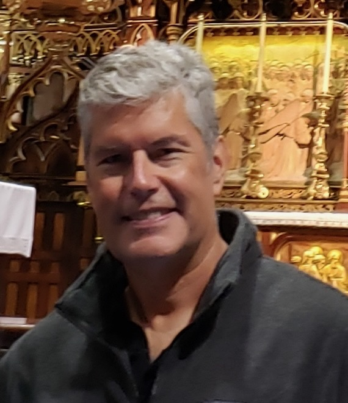
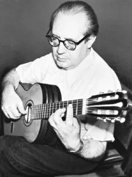
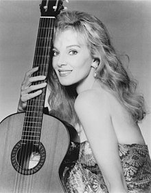
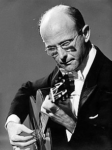
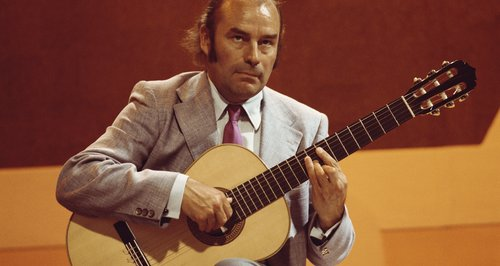
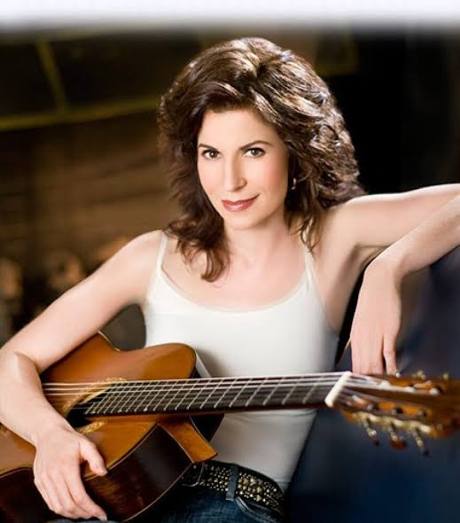
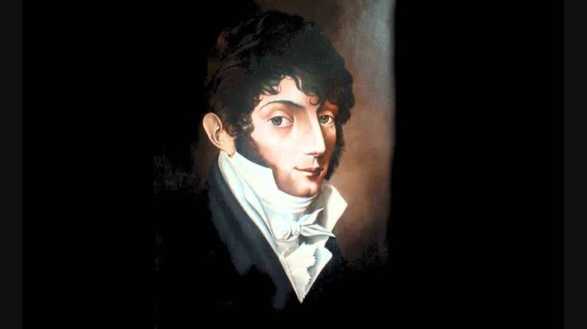
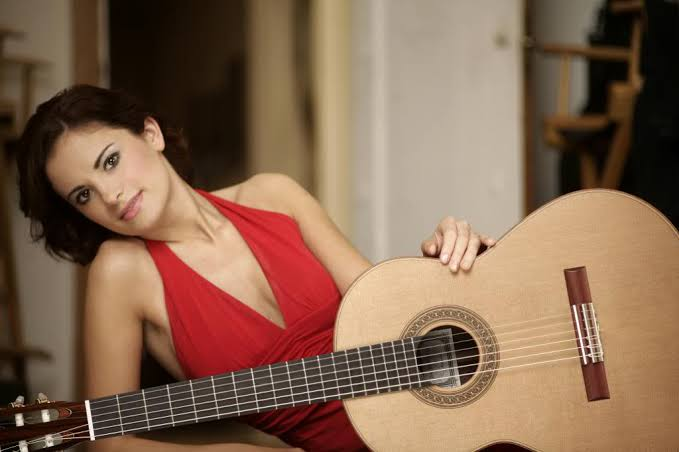
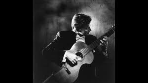

My Favourite Classical Guitarists
This site is meant as an introduction to classical guitar featuring some of my favourite guitarists in the classical realm. It includes some links to musical examples and career highlights from each guitarist. I hope you enjoy it.
Author: Robin Irving

"The guitar is a small orchestra. It is polyphonic. Every string is a different color, a different voice." Andres Segovia

Andres Segovia
Andrés Segovia Torres,[a] 1st Marquis of Salobreña (21 February 1893 – 2
June 1987) was a Spanish virtuoso classical guitarist. Many professional
classical guitarists were either students of Segovia or students of
Segovia's students.[1] Segovia's contribution to the modern-romantic
repertoire included not only commissions but also his own transcriptions
of classical or baroque works. He is remembered for his expressive
performances: his wide palette of tone, and his distinctive musical
personality, phrasing and style.Segovia was born on 21 February 1893[2] in
Linares, Jaén. He was sent at a very young age to live with his uncle
Eduardo and aunt María. Eduardo arranged for Segovia's first music lessons
with a violin teacher after he had recognised that Segovia had an aptitude
for music. That proved to be an unhappy introduction to music for the
young Segovia because of the teacher's strict methods, and Eduardo stopped
the lessons. His uncle decided to move to Granada to allow Segovia to
obtain a better education. After arriving in Granada, Segovia recommenced
his musical studies. Segovia was aware of flamenco during his formative
years as a musician but stated that he "did not have a taste" for the form
and chose instead the works of Fernando Sor, Francisco Tárrega, and other
classical composers.[3] Tárrega agreed to give the self-taught Segovia
some lessons but died before they could meet, and Segovia states that his
early musical education involved the "double function of professor and
pupil in the same body".[4] Career Segovia's first public performance was
in Granada[5] at the age of 16 in 1909.[6] A few years later he played his
first professional concert in Madrid, which included works by Francisco
Tárrega and his own guitar transcriptions of Johann Sebastian Bach.
Despite the discouragement of his family, who wanted him to become a
lawyer, and criticism by some of Tárrega's pupils for his idiosyncratic
technique,[7] he continued to pursue his studies of the guitar diligently.
He played again in Madrid in 1912, at the Paris Conservatory in 1915 and
in Barcelona in 1916 and made a successful tour of South America in
1919.[2] Segovia's arrival on the international stage coincided with a
time when the guitar's fortunes as a concert instrument were being
revived, largely through the efforts of Miguel Llobet.[8] It was in that
changing milieu that Segovia, thanks to his strength of personality and
artistry, coupled with developments in recording and broadcasting,
succeeded in making the guitar more popular again. In 1921 in Paris,
Segovia met Alexandre Tansman, who later wrote a number of guitar works
for Segovia, among them Cavatina, which won a prize at the Siena
International Composition contest in 1952.[9] In 1921, he also met Agustín
Barrios in Buenos Aires, Argentina. Segovia was impressed by Barrios'
Bach-inspired and arguably magnum opus La Catedral.[10] At Granada in
1922, he became associated with the Concurso de Cante Jondo, promoted by
the Spanish composer Manuel de Falla. The aim of the "classicising"
Concurso was to preserve flamenco in its purity from being distorted by
modern popular music.[11] Segovia had already developed as a fine tocador
of flamenco guitar, yet his direction was now classical.[12] Invited to
open the Concurso held at the Alhambra, he played Homenaje a Debussy by
Falla.[13] Guitar by Hermann Hauser, 1937, Munich, Germany. Concert guitar
of Andrés Segovia's from 1937 until 1962. Gift of Emilita Segovia,
Marquesa of Salobreña, 1986 (1986.353.1). Housed in the Metropolitan
Museum of Art. In 1923, Segovia visited Mexico for the first time. There
Manuel Ponce was so impressed with the concert that he wrote a review in
El Universal.[14] Later Ponce went on to write many works for Segovia,
including numerous sonatas. In 1924, Segovia, visited the German luthier
Hermann Hauser Sr. after Segovia heard some of Hauser's instruments played
in a concert in Munich. In 1928, Hauser provided Segovia with one of the
guitars, which Segovia used during his tour of the United States and in
other concerts up to 1933. Segovia ordered a further guitar from Hauser
and after receiving it passed on the 1928 model to his American
representative and close friend Sophocles Papas, who in his turn gave it
to his student, the famous jazz and classical guitarist Charlie Byrd, who
used it on several records. Segovia's first American tour was arranged in
1928 when Fritz Kreisler, the Viennese violinist who privately played the
guitar,[15] persuaded Francis Charles Coppicus from the Metropolitan
Musical Bureau to present the guitarist in New York.[16][17] After
Segovia's debut tour in the US in 1928 the Brazilian composer Heitor
Villa-Lobos composed his now well-known Twelve Études (Portuguese: Doze
estudos; French: Douze études; German: Zwölf Studien) and later dedicated
them to Segovia. Their relationship proved to be lasting, and Villa-Lobos
continued to write for Segovia. He also transcribed numerous classical
pieces himself and revived the pieces transcribed by predecessors like
Tárrega. Segovia at a recital in the "Concerts Ysaye" in Brussels, 15
December 1932 (Hilda Wiener, 1877–1940) In 1932, Segovia met and
befriended the composer Mario Castelnuovo-Tedesco in Venice.[9] Since
Castelnuovo-Tedesco did not play the guitar, Segovia provided him with
guitar compositions (Ponce's Folias variations and Sor's Mozart
Variations), which he could study. Castelnuovo-Tedesco composed a large
number of works for the guitar, many of them dedicated to Segovia. The
Concerto Op. 99 of 1939 was the first guitar concerto of the 20th century
and Castelnuovo-Tedesco's last work in Italy, before he emigrated to the
United States. It was premiered by Segovia in Uruguay in 1939.[18] In
1935, he gave his first public performance of Bach's Chaconne, a difficult
piece for any instrument. He moved to Montevideo and performed many
concerts in South America in the 1930s and the early 1940s. After World
War II, Segovia began to record more frequently and performed regular
tours of Europe and America and would maintain that schedule for 30 years.
In 1954, Joaquín Rodrigo dedicated Fantasía para un gentilhombre (Fantasy
for a Gentleman) to Segovia.[19] Segovia won the 1958 Grammy Award for
Best Classical Performance, Instrumentalist for his recording Segovia
Golden Jubilee.[20] John W. Duarte dedicated his English Suite Op. 31 to
Segovia and his wife, Emilia Magdalena del Corral Sancho, on the occasion
of their marriage in 1962.[21] Segovia told the composer "You will be
astonished at the success it will have".[22][23] In recognition of his
contributions to music and the arts, Segovia was ennobled on 24 June 1981
by King Juan Carlos I, who gave Segovia the hereditary title of Marqués de
Salobreña[24][25] (English: Marquis of Salobreña) in the nobility of
Spain. Segovia continued performing into his old age, and lived in
semi-retirement during his seventies and eighties on the Costa del Sol.
Two films were made of his life and work, one when he was 75 and the other
when he was 84. They are available on DVD under the titles Andrés
Segovia—in Portrait. His final RCA LP (ARL1-1602), Reveries, was recorded
in Madrid in June 1977. In 1984, Segovia was the subject of a 13-part
series broadcast on National Public Radio, Segovia! The series was
recorded on location in Spain, France and the United States. Hosted by
Oscar Brand, the series was produced by Jim Anderson, Robert Malesky and
Larry Snitzler. Segovia died on 2 June 1987[2] in Madrid of a heart attack
at the age of 94. He is buried at Casa Museo Andrés Segovia in Linares.
Technique The right hand is responsible for the guitar's musical sound and
so in examining the technique, the way the right hand is placed in
relation to the strings is most important.[citation needed] For several
years, it was thought among the guitar community that Segovia plucked the
strings with a combination of fingertip and nail, as stated by Christopher
Parkening[citation needed], but Segovia plucked the strings only with the
nails. When asked which technique he used, he replied that it was "the
only one there is: nails. Because they bring timbre differences and colour
variation and give sonorous volume to the guitar."[26] His right hand was
placed so that the nails were perpendicular to the strings. That way, the
nail alone would press the string. At the same time, it was thought that
was the only way to avoid unpleasant noise coming from the low strings (E,
A and D) of the guitar when they were plucked. Segovia created a strong
bass sound with his right thumb in spite of his technique, largely because
of the flexibility that he had in his thumb, which helped to create a very
strong and voluminous sound in the bass notes. Another innovation that
separated Segovia from the Tárrega school was the search for the tension
in the strings by placing his right hand further to the right side. That
way, he could obtain colour variation but also an especially strong, round
and voluminous sound, which was very helpful for giving concerts in big
halls (the technique was later used by Narciso Yepes). Before Segovia,
guitarists from the Tárrega school played the guitar with the hand right
over the soundhole and thus created a mellow sound but could not fill the
whole space of a large concert hall. After World War II, Segovia became
among the first to endorse nylon strings, instead of catgut strings.[27]
That advancement allowed for greater tonal stability and was the final
ingredient in the standardization of the instrument. Repertoire Segovia's
repertoire consisted of three principal pillars: first, contemporary
works, including concertos and sonatas, usually specifically written for
Segovia himself by composers with whom he forged working relationships,
notably Federico Moreno Torroba, Federico Mompou, and Joaquín Rodrigo, the
Mexican composer Manuel Ponce, the Italian composer Mario
Castelnuovo-Tedesco, and the great Brazilian composer Heitor Villa-Lobos;
second, transcriptions, usually made by Segovia himself,[28] of classical
works originally written for other instruments (e.g., lute, harpsichord,
piano, violin, cello) by Johann Sebastian Bach, Isaac Albéniz, Enrique
Granados, and many other prominent composers; third, traditional classical
guitar works by composers such as Fernando Sor and Francisco Tárrega.
Segovia's influence enlarged the repertoire, mainly as a commissioner or
dedicatee of new works, as a transcriber, and as a composer[29] with such
works as his Estudio sin luz. Segovia in 1962 Segovia's main musical
aesthetic preferences were music of the early 20th century (and turn of
the century) especially in the Spanish romantic-modern and nationalist
style. That is perhaps best typified by Segovia's own work Estudio sin
Luz. Many works of that and similar styles were written especially for him
and formed part of his core repertoire: particularly the guitar works of
Federico Moreno Torroba (1891–1982), such as the Sonatina, which was first
performed by Segovia in Paris in 1925.[30] Segovia was selective and
performed only works with which he identified personally. He was known to
reject atonal works or those that he considered too radical even if they
were dedicated to him; he rejected Frank Martin's Quatre pièces brèves,
Darius Milhaud's Segoviana, etc.[31][32] Even though rejected by Segovia,
all of those works are today published and
available.[33][34][35][36][37][38] Teaching Segovia viewed teaching as
vital to his mission of propagating the guitar and gave master classes
throughout his career. His most famous master classes took place at Música
en Compostela, in the Spanish city of Santiago de Compostela.[39] Segovia
also taught at the Accademia Musicale Chigiana in Siena for numerous
years, where he was aided by Alirio Díaz.[40] His teaching style is a
source of controversy among some of his former students, who considered it
to be dogmatically authoritarian.[41] One of Segovia's most celebrated
former students of the classical guitar, John Williams, has said that
Segovia bullied students into playing only his style and stifled the
development of their own styles.[42][43] Williams has also said that
Segovia was dismissive of music that did not have what Segovia considered
the correct classical origins, such as South American music with popular
roots.[42] He was also critical of Williams' work with the group Sky for
the same reasons. Legacy Segovia can be considered a catalytic figure in
granting respectability to the guitar as a serious concert instrument
capable of evocativeness and depth of interpretation. Federico Moreno
Torroba said, "The musical interpreter who fascinates me the most is
Andrés Segovia."[44] He can be credited to have dignified the classical
guitar as a legitimate concert instrument before the discerning music
public, which had hitherto viewed the guitar merely as a limited if
sonorous parlour instrument. In Linares, the Segovia Museum "Fundación
Andrés Segovia" was established in May 1995,[45] and Linares (Segovia's
birthplace) also has a bronze statue in his honour, created by Julio López
Hernández and unveiled on 25 May 1984.[46][47][48] Segovia influenced a
generation of classical guitarists who built on his technique and musical
sensibility, including Christopher Parkening, Julian Bream, John Williams
and Oscar Ghiglia, all of whom have acknowledged their debt to him.
Further, Segovia left behind a large body of edited works and
transcriptions for classical guitar, including several transcriptions of
Bach, particularly an extraordinarily-demanding classical guitar
transcription of the Chaconne from the 2nd Partita for Violin (BWV 1004).
During his lifetime, guitarists were eager to claim association with
Segovia, who suggested that he had not actually taught as many students as
has been claimed. He once said, "All over the world I have 'pupils' I have
never met."[49] His editions of works originally written for guitar
include newly-fingered and occasionally-revised versions of works from the
standard repertoire (most famously, his edition of a selection of twenty
estudios by Fernando Sor,[50] the "cornerstone" of every serious student's
technique since its publication in 1945 although somewhat ironically,
Segovia, in the preface to that work, disparaged Sor as "not among the
vigorous talents") as well as compositions written for him, including by
Heitor Villa-Lobos, Federico Mompou, and Mario Castelnuovo-Tedesco.[51]
Many of the latter had been edited by Segovia, working in collaboration
with the composer, before they were first published. Because of Segovia's
predilection for altering the musical content of his editions to reflect
his interpretive preferences, many of today's guitarists prefer to examine
the original manuscripts or newer publications based on the original
manuscripts to compare them with Segovia's published versions to accept or
reject Segovia's editorial decisions.[citation needed] Segovia was one of
those to whom homage was paid in the 1978 song by Ian Dury and The
Blockheads "There Ain't Half Been Some Clever Bastards." Influential rock
entertainer Johnny Thunders included a guitar instrumental titled
"Illegitimate Son of Segovia" in his album Hurt me. Namings

Augustin Barrios
Barrios was famed for his phenomenal performances, both live and on
gramophone recordings. Eye-witness testimony from Lope Texera in Caracas
Venezuela on April 18, 1932, declared that Barrios was "superior to
Segovia whom I saw in London last year". Barrios has been credited as the
first classical guitarist to make recordings, in 1909/10, but the earliest
known recording were by guitarists Luis and Simon Ramirez, onto cylinders,
for the "Viuda de Aramburo" label, in Madrid, between 1897 and 1901.[4]
Barrios sometimes performed in concert in traditional Paraguayan dress (he
was partly of Guaraní origin), beginning in 1932 using the pseudonym of
Nitsuga Mangoré ('Nitsuga' being Agustín spelled backwards, and 'Mangoré'
being the name of a cacique of the South American indigenous group
Timbú).[citation needed] His works were largely late-Romantic in
character, despite his having lived well into the twentieth century. Many
of them are also adaptations of, or are influenced by, South American and
Central American folk music. Many of them are considered virtuosic. The
Johann Sebastian Bach-inspired La Catedral, from 1921, is widely
considered to be Barrios' magnum opus, even winning the approval of Andrés
Segovia, who said "In 1921 in Buenos Aires, I played at the hall La
Argentina noted for its good acoustics for guitar, where Barrios had
concertized just weeks before me. He was presented to me by his secretary
Elbio Trapani. At my invitation Barrios visited me at the hotel and played
for me upon my very own guitar several of his compositions among which the
one that really impressed me was a magnificent concert piece The Cathedral
whose first movement is an andante, like an introduction and prelude, and
a second very virtuosic piece which is ideal for the repertory of any
concert guitarist. Barrios had promised to send me immediately a copy of
the work (I had ten days remaining before continuing my journey) but I
never received a copy."[5] However, it is equally possible that Segovia
did receive the score and chose not to play it, either out of distaste for
Barrios' folk-based music or professional jealousy (because Barrios was
more of a composer than he was). During his career, Barrios taught his
patrons Luis Pasquet, Martin Borda Pagola, Dionisio Basualdo, Bautista and
Lalyta Almiron, and Raul Borges. Following his extensive travels in
Brazil, while he was an active performer and beginning in 1940, he wrote
his guitar method to provide guitar instruction after arriving in El
Salvador to selected students, mostly of Salvadoran nationality. They were
known as the Twelve Mangoreanos: Luis Mario Samayoa ( -1969), Benjamín
Cisneros ( -1987), Rubén Urquilla ( -1993), René Cortés-Andrino ( -1995),
Mario Cardona Lazo ( -1999), Jesús Quiroa ( -2001), Jose Cándido Morales (
-2002), Julio Cortés-Andrino ( -2006), Cecilio Orellana ( -2007), Roberto
Bracamontes ( -2007), Víctor Urrutia ( -2010) and Elena Valdivieso. Jose
Cándido Morales and Roberto Bracamonte were the only ones to learn from
Barrios as live-in students in the Barrios home, which functioned as a
boarding house. After Barrios' death, Morales remained the keeper of
Barrios' legacy, technique and late works. The folk music of Paraguay
(including the polca paraguaya and vals) provided the young Barrios with
his first introduction to music. In 1898, Barrios was formally introduced
to the classical guitar repertoire by Gustavo Sosa Escalada. At that time,
Barrios may have already composed works for the guitar, and also performed
pieces written by his other composers, such as La Chinita and La Perezosa.
Under the influence of his new teacher, Barrios went on to perform and
study the works of Tárrega, Viñas, Sor and Aguado. Sosa Escalada was so
impressed with his new pupil that he convinced Barrios's parents to let
him move to Asunción to continue his education. Having already surpassed
the technical and performing abilities of most guitarists, Barrios began
seriously to compose around 1905. Among the folkloric influences, Barrios
is known to have played such popular Paraguayan works as "Campamento Cerro
León", "Londón Carapé", "Guyrá campana", "Mamá Cumandá".[8] As an example,
"Guyrá campana" is very interesting, since some of the material can be
heard in parts of Barrios' recording of "Caazapá — Aire Popular
Paraguayo". Though "Guyrá campana" is traditional music, many maintain
that it is very closely related to guitarist Carlos Talavera (from
Caazapá), whom Barrios knew.[9][10][11][12] There are various versions of
"Guyrá campana" (it is also known as "Pájaro campana") e.g. for Paraguayan
harp (Félix Pérez Cardozo[12]); in some versions, the birdsong imitations
can be very clearly heard.[13]

Liona Boyd
Liona Boyd was born in London and grew up in Toronto.[5] Her father grew
up in Bilbao, Spain, and her mother in Stoke-on-Trent, England. Her
grandmother was from Linares, Spain, the birthplace of the "king of the
classical guitar", Andrés Segovia. During her family's first of two ocean
voyages to Canada she made her debut performance playing "Bluebells of
Scotland" on a treble recorder in a talent show on the ship. When she was
thirteen, she was given her first guitar, a Christmas present which her
parents had bought in Spain seven years earlier.[6] She took lessons from
Eli Kassner, Narciso Yepes, Alirio Díaz, Julian Bream, and Andrés Segovia.
Boyd received a Bachelor of Music degree from the University of Toronto in
1972, graduating with honours. After graduation she studied privately for
two years with Alexandre Lagoya in Paris. [5][7] Performing In 1975, she
performed at Carnegie Hall in New York City.[5] Andrés Segovia sent her a
note that said "through your beauty and talent you will conquer the
public, philharmonic or not."[8] During the same year, she toured northern
British Columbia and Yukon.[9] She also toured as the opening act for with
Canadian folk singer Gordon Lightfoot.[5] Recordings In 1974, Boyd
released her debut album, The Guitar. It was produced by Eleanor
Koldofsky[10] and was released on Boot Records. The record was distributed
internationally by London Records. In 1976, Boyd joined Society of
Composers, Authors and Music Publishers of Canada, and established her own
publishing company, Mid-Continental Music. In 1989, her album Christmas
Dreams appeared on the RPM 100 Top Albums chart. To date she has three
platinum and four gold albums in Canada.[11] As of 2018, she has recorded
26 studio albums, made a live recording from Tokyo, created over 25 music
videos, and produced three compilation recordings. During her career, Boyd
has recorded with Chet Atkins, Eric Clapton, Al Di Meola, Rik Emmett,
David Gilmour, Alex Lifeson, Steve Morse, the Canadian Brass, André
Gagnon, Yo Yo Ma, Frank Mills, Strunz & Farah, Roger Whittaker, Gheorghe
Zamfir, Pavlo, Jesse Cook, and Olivia Newton-John.[12]

Narciso Yepes
Narciso Yepes was born into a family of humble origin in Lorca, Region of
Murcia. His father gave him his first guitar when he was four years old,
and took the boy five miles on a donkey to and from lessons three days a
week. Yepes took his first lessons from Jesús Guevara, in Lorca. Later his
family moved to Valencia when the Spanish Civil War started in 1936. When
he was 13, he was accepted to study at the Conservatorio de Valencia with
the pianist and composer Vicente Asencio. Here he followed courses in
harmony, composition, and performance. Yepes is credited by many with
developing the A-M-I technique of playing notes with the ring (Anular),
middle (Medio), and index (Indice) fingers of the right hand.[2] Guitar
teachers traditionally taught their students to play by alternating the
index and middle fingers, or I-M. However, since Yepes studied under
teachers who were not guitarists, they pushed him to expand on the
traditional technique. According to Yepes, Asencio "was a pianist who
loathed the guitar because a guitarist couldn't play scales very fast and
very legato, as on a piano or a violin. 'If you can't play like that,' he
told me, 'you must take up another instrument.'" Through practice and
improvement in his technique, Yepes could match Asencio's piano scales on
the guitar. "'So,' he [Asencio] said, 'it's possible on the guitar. Now
play that fast in thirds, then in chromatic thirds.'"[3] Allan Kozinn
observed that, "Thanks to Mr. Asencio's goading, Mr. Yepes learned "to
play music the way I want, not the way the guitar wants."[4] Similarly,
the composer, violinist, and pianist George Enescu would also push Yepes
to improve his technique, which also allowed him to play with greater
speed.[5] On 16 December 1947 he made his Madrid début, performing Joaquín
Rodrigo's Concierto de Aranjuez with Ataúlfo Argenta conducting the
Spanish National Orchestra. The overwhelming success of this performance
brought him renown from critics and public alike. Soon afterwards, he
began to tour with Argenta, visiting Switzerland, Italy, Germany, and
France. During this time he was largely responsible for the growing
popularity of the Concierto de Aranjuez, and made two early recordings,
both with Argenta[6] – one in mono with the Madrid Chamber Orchestra
(released between 1953 and 1955),[7] and the second in stereo with the
Orquesta Nacional de España (recorded in 1957 and released in 1959).[8] In
1950, after performing in Paris, he spent a year studying interpretation
under the violinist George Enescu, and the pianist Walter Gieseking. He
also studied informally with Nadia Boulanger. This was followed by a long
period in Italy where he profited from contact with artists of every
kind.[citation needed] On 18 May 1951, as he leant on the parapet of a
bridge in Paris and watched the Seine flow by, Yepes unexpectedly heard a
voice inside him ask, "What are you doing?" He had been a nonbeliever for
25 years, perfectly content that there was no God or transcendence or
afterlife. But that existential question, which he understood as God's
call, changed everything for him. He became a devout Catholic, which he
remained for the rest of his life.[9] In 1952 a work ("Romance"), Yepes
claims to have written when he was a young boy,[10] became the theme to
the film Forbidden Games (Jeux interdits) by René Clément. Despite Yepes's
claims of composing it, the piece ("Romance") has often been attributed to
other authors; indeed published versions exist from before Yepes was even
born, and the earliest known recording of the work dates from a cylinder
from around 1900.[11][12][13] In the credits of the film Jeux Interdits,
however, "Romance" is credited as "Traditional: arranged – Narciso Yepes."
Yepes also performed other pieces for the Forbidden Games soundtrack. His
later credits as film composer include the soundtracks to La Fille aux
yeux d'or (1961) and La viuda del capitán Estrada (1991). He also starred
as a musician in the 1967 film version of El amor brujo.

Julian Bream
Julian Bream (15 July 1933 – 14 August 2020) was an English classical
guitarist and lutenist.Regarded as one of the most distinguished classical
guitarists of the 20th century, he played a significant role in improving
the public perception of the classical guitar as a respectable instrument.
Over the course of a career that spanned more than half a century, Bream
also helped revive interest in the lute. After three and half years in the
army, he took any musical jobs that came his way, including background
music for radio plays and films.[6] Recording sessions and work for the
BBC were important to Bream throughout the 1950s and the early 1960s.[6]
He played part of a recital at the Wigmore Hall on the lute in 1952.[12]
Bream pursued a busy career playing around the world. His first European
tours took place in 1954 and 1955, followed (beginning in 1958) by
extensive touring in the Far East, India, Australia, the Pacific Islands
and many other parts of the world. His first North America tour was in
1959.[13] 1960 saw the formation of the Julian Bream Consort, a
period-instrument ensemble with Bream as lutenist.[5] The consort led a
great revival of interest in the music of the Elizabethan era. In 1963,
Bream performed for the Peabody Mason Concert series in Boston with the US
debut of his Consort. In addition to master classes, Bream was a tutor of
the music summer school at Dartington.[16][5] Later career In 1984, Bream
seriously injured his right arm in a car accident. In 1991, BBC Radio and
TV broadcast Bream's BBC Prom performance of Malcolm Arnold's Guitar
Concerto.[17] He also participated in a recital and concerto performances
of works by Toru Takemitsu at the Japan Festival in London with the London
Symphony Orchestra. During the 1992–93 season he performed on two
occasions at the Wigmore Hall – at their Gala Re-opening Festival, and at
a special concert celebrating his 60th birthday. In the same period, he
toured the Far East, visiting Hong Kong, Taiwan, Korea and Japan, and
performed the premiere of Leo Brouwer's arrangement for guitar and
orchestra of Albéniz's Iberia at the Proms. In 1994 Bream made debuts in
both Turkey and Israel to great acclaim, and the following year played for
the soundtrack to the Hollywood film Don Juan DeMarco.[18] In 1997, in
celebration of the 50th anniversary of his debut, he performed a recital
at Cheltenham Town Hall. A few weeks later, the BBC dedicated a television
tribute This Is Your Life programme to Bream, filmed after a commemorative
concert at the Queen Elizabeth Hall, London.[18][5] Other engagements
around that time included a gala solo performance at the Philharmonic
Hall, Liverpool; a Kosovo Aid concert at St. John's, Smith Square, London,
with the Academy of St. Martin in the Fields; recitals at the Snape Proms,
Aldeburgh, and at the Norfolk and Norwich Festival; and a tour of National
Trust properties in summer and autumn 2000.[18] In November 2001 he gave
an anniversary recital at Wigmore Hall, celebrating 50 years since his
debut there in 1951.[18] His final recital was at Maddermarket Theatre,
Norwich, on 6 May 2002.[11][6] Style and influences Bream's recitals were
wide-ranging, including transcriptions from the 17th century, many pieces
by Bach arranged for guitar, popular Spanish pieces, and contemporary
music, for much of which he was the inspiration. He stated that he was
influenced by the styles of Andrés Segovia and Francisco Tárrega.[19]
Bream had some "sessions" with Segovia but did not actually study with
him.[5] Segovia provided a personal endorsement and scholarship request to
assist Bream in taking further formal music studies.[20] Bream's work
showed that the guitar could be capably utilized in English, French, and
German music.[6] Bream's playing can be characterised as virtuosic and
highly expressive, with an eye for details, and with strong use of
contrasting timbres. He did not consistently hold his right-hand fingers
at right angles to the strings, but used a less rigid hand position for
tonal variety.[21] Bream met Igor Stravinsky in Toronto, Canada, in 1965.
He tried unsuccessfully to persuade the composer to write a composition
for the lute and played a pavane by Dowland for him. The meeting between
Bream and Stravinsky, including Bream's impromptu playing, was filmed by
the National Film Board of Canada in making a documentary about the
composer.[22] Recordings Bream recorded extensively for RCA Victor and EMI
Classics. These recordings won him several awards, including four Grammy
Awards, two for Best Chamber Music Performance and two for Best Classical
Performance.[23] RCA also released The Ultimate Guitar Collection, a
multi-CD set commemorating his birthday in 1993.[5][24] Despite his
importance as a classical guitarist, however, many of his RCA recordings
(including the series of 20th-century guitar music) were out of print for
several years. In 2011, RCA released My Favorite Albums, a 10-CD set of
albums chosen by Julian Bream himself.[25] In 2013, RCA issued Julian
Bream: The Complete RCA Album Collection, a 40-CD set which also includes
two DVDs with The Lively Arts – Julian Bream: A Life in the Country, the
1976 BBC film; and four BBC shows: Omnibus: Anniversary of Sir William
Walton [1982], The Julian Bream Consort (1961), Monitor – Film Profile of
Julian Bream [1962], and The Julian Bream Consort (1964).[26] Television
and video A film, A Life in the Country, was first shown on BBC TV in
1976.[27] In it, the narrator and Bream discuss his beginnings and his
life as a concert guitarist. Bream also presented a series of four
master-classes for guitarists on BBC TV.[28] In 1984 he made eight film
segments on location in Spain for Channel 4. The collection of segments
¡Guitarra! A Musical Journey Through Spain explored historical
perspectives of Spanish guitar music.[29][30][31] The 2003 DVD video
profile Julian Bream: My Life in Music contains three hours of interviews
and performances. It has been declared by Graham Wade "the finest film
contribution ever to the classic guitar" and it became "Gramophone DVD of
the year".

Sharon Isbin
Isbin has appeared as soloist with over 200 orchestras, and has
commissioned more concertos than any other guitarist—including those
written for her by John Corigliano, Tan Dun, Aaron Jay Kernis, Joseph
Schwantner, Lukas Foss, Chris Brubeck, Christopher Rouse and Karen
LeFrak.[10] In 2015, she performed with Josh Groban on PBS's Billy Joel:
Gershwin Prize concert,[11] and in February 2015 she was featured on the
Tavis Smiley PBS television series. In 2005, Isbin performed a world
premiere of Blossom Suite along with the composer, rock guitarist Steve
Vai. Her earliest crossover collaborations began with Brazilian guitarist
Laurindo Almeida and jazz guitarist Larry Coryell. In 2014, she performed
a 20-city Guitar Passions tour with jazz musicians Stanley Jordan and
Romero Lubambo. Among more than 80 works composed for her which she has
premiered are solo and chamber works by Joan Tower, David Diamond, Ned
Rorem, Howard Shore, John Duarte, Leo Brouwer, Joseph Schwantner, Amjad
Ali Khan and Bruce MacCombie. New York's Carnegie Hall and Chicago's
Harris Theater commissioned composer Richard Danielpour to write a song
cycle for Isbin and mezzo-soprano Isabel Leonard to commemorate the 125th
anniversary of Carnegie Hall.[12] She has premiered over 80 works by
world-renowned composers. Isbin's catalogue of over 35 albums has sold
over one million copies ranging from Baroque music, Spanish/Latin, and
20th century to crossover and jazz fusion. Her most recent releases are
LIVE IN ASPEN (2024), AFFINITY: World Premiere Recordings, and STRINGS FOR
PEACE: Premieres for Guitar & Sarod with Amjad Ali Khan, both of which
were named Best of 2020 by NPR, SiriusXM, and multiple media. Her
Souvenirs of Spain & Italy (Cedille) with the Pacifica Quartet debuted at
number two on the Billboard charts and at number one on Amazon. Her Alma
Espanola (Bridge) with mezzo-soprano Isabel Leonard was honored by a 2018
GRAMMY Award for Producer of the Year, Classical. The acclaimed one-hour
documentary Sharon Isbin: Troubadour won the 2015 ASCAP Television
Broadcast Award.[13][14][15] In October 2014, Warner Classics released a
5-CD box set of her most popular albums titled Sharon Isbin: 5 Classic
Albums. Her 2011 release, Sharon Isbin & Friends: Guitar Passions (Sony),
became a bestseller on Amazon.com and includes guest artists Steve Vai,
Stanley Jordan, Nancy Wilson, Steve Morse, Romero Lubambo, Rosa Passos,
Thiago de Mello, and Paul Winter. Awards and nominations Boston magazine
called Isbin "the pre-eminent guitarist of our time" [16] She was the
winner of Guitar Player magazine's Best Classical Guitarist award. Isbin
has also won the following awards: First Prize at the Toronto Guitar '75
competition Winner Munich ARD International Music Competition, 1976 The
Madrid Queen Sofia Concert Artists Guild 2013 Virtuoso Award Germany's
Echo Klassik Award Musical America Worldwide 2020 Instrumentalist of the
Year Guitar Foundation of America HALL OF FAME and Artistic Achievement
Award, 2023 [17] When Isbin won Musical America’s 2020 Instrumentalist of
the Year, she became the first guitarist in their 59 award-year history to
receive the award.[18] She was the first guitarist to win the Munich ARD
International Competition. Isbin won a Grammy Award in 2001 for Dreams of
a World: Folk-Inspired Music for Guitar (Warner Classics) for "Best
Instrumental Soloist", becoming the first classical guitarist to win a
Grammy in 28 years. Her world premiere recording of concertos written for
her by Christopher Rouse and Tan Dun won a Grammy in 2002. In 2010, Isbin
won another Grammy Award for Best Instrumental Soloist for her CD Journey
to the New World (Sony), which includes guests Joan Baez and Mark
O'Connor. The album spent 63 consecutive weeks on the top of the Billboard
charts and was ranked as the number one bestselling classical CD on
Amazon.com and iTunes during that time. She received a 2005 Latin Grammy
nomination for "Best Classical Album" and a 2006 GLAAD Media Award
nomination for "Outstanding Music Artist" for her recording of Joaquín
Rodrigo's Concierto de Aranjuez with the New York Philharmonic. The
recording also featured concertos by Mexican composer Manuel Ponce and
Brazilian Heitor Villa-Lobos. Isbin was the first guitar soloist to
perform with the New York Philharmonic in 26 years, and the recording was
also the New York Philharmonic's first-ever recording with guitar. Her
album Journey to the Amazon received a 1999 Grammy nomination for "Best
Classical Crossover Album", and the album on which she appeared playing
Aaron Jay Kernis' Double Concerto with violinist Cho-Liang Lin and the
Saint Paul Chamber Orchestra received a 2000 Grammy nomination for "Best
Contemporary Classical Composition" for Kernis' Air for Violin. On
September 11, 2002, Isbin's performance for the memorial tribute at Ground
Zero was televised live throughout the world. In November 2009, Isbin
performed a concert at the White House by invitation of President Obama
and First Lady Michelle Obama.[19] Teaching and other work In 1989, Isbin
creates the Master of Music degree, Graduate Diploma, and Artist Diploma
for classical guitar at the Juilliard School, becoming the founding
director of their guitar department; she added the Bachelor of Music
degree and Undergraduate Diploma to the program in 2007, and the Doctor of
Musical Arts in 2018.[20] Isbin is the author of the Classical Guitar
Answer Book, and is the director of the Guitar Department at the Aspen
Music Festival.[21] On November 5, 2015, the David Lynch Foundation
organized a benefit concert at New York City's Carnegie Hall named "Change
Begins Within", to promote transcendental meditation for stress control.
Sharon Isbin participated alongside the likes of Katy Perry, Sting, Jerry
Seinfeld, Angelique Kidjo and Jim James.[22]

Mauro Guiliani
Mauro Giuseppe Sergio Pantaleo Giuliani (27 July 1781 – 8 May 1829) was an
Italian guitarist, cellist, singer, and composer. He was a leading guitar
virtuoso of the early 19th century. Giuliani defined a new role for the
guitar in the context of European music. He was acquainted with the
highest figures of Austrian society and with notable composers such as
Rossini and Beethoven, and cooperated with the best active concert
musicians in Vienna. In 1815 he appeared with Johann Nepomuk Hummel
(followed later by Ignaz Moscheles), the violinist Joseph Mayseder and the
cellist Joseph Merk, in a series of chamber concerts in the botanical
gardens of Schönbrunn Palace, concerts that were called the "Dukaten
Concerte",[2] after the price of the ticket, which was a ducat. This
exposure gave Giuliani prominence in the musical environment of the city.
Also in 1815, he was the official concert artist for the celebrations of
the Congress of Vienna. Two years earlier, on 8 December 1813, he had
played (probably cello) in an orchestra for the first performance of
Beethoven's Seventh Symphony. In Vienna, Giuliani had minor success as a
composer. He worked mostly with the publisher Artaria, who published many
of his works for guitar, but had dealings with other local publishers who
spread his compositions across Europe. He developed a teaching career here
as well; among his numerous students were Jan Nepomucen Bobrowicz and
Felix Horetzky. In 1819 Giuliani left Vienna, mainly for financial
reasons: he expected to make financial profit on a concert tour through
Bohemia and Bavaria. He returned to Italy, spending time in Trieste and
Venice, and finally settled in Rome. In 1822 he brought his illegitimate
daughter Emilia to Italy, who had been born in Vienna in 1813. She was
educated at the nunnery L'adorazione del Gesù from 1821 to 1826, together
with Giuliani's first illegitimate daughter Maria Willmuth. In Rome he had
little success, publishing only a few compositions and giving only one
concert. In July 1823 he began a series of trips to Naples to be with his
father, who was seriously ill. In the Bourbon city of Naples, Giuliani
would find a better reception to his guitar artistry, and was able to
publish other works for guitar with local publishers. In 1826 he performed
in Portici before Francesco I and the Bourbon court. During this
Neapolitan period, he appeared frequently in duo concert with his daughter
Emilia, who had become a skilled performer on the guitar. Toward the end
of 1827 his health began to fail; and he died in Naples on 8 May 1829.

Ana Vidovic
Her international career includes frequent recitals, concerto engagements,
festival appearances, and tours all over the world. Vidović has performed
with numerous orchestras. She often plays works by Johann Sebastian Bach,
who is her favorite composer, and other composers such as Federico Moreno
Torroba, Manuel Ponce, Francisco Tárrega, and Joaquín Rodrigo (including
Concierto de Aranjuez).[3][5][1] Ana Vidović has won over twenty awards at
international competitions, in which she participated until she was 18
years old.[1] Her accolades include first prizes in the Albert Augustine
Memorial International Competition (Bath, England) at the age of 13, the
Fernando Sor competition (Rome, Italy), and the Francisco Tárrega
competition (Benicàssim, Spain). Other top prizes include the Eurovision
Young Musicians competition, the Mauro Giuliani competition in Italy, the
Printemps de la Guitare competition in Belgium, and the Young Concert
Artists International Auditions in New York.[6][5][7] In a review of one
of her performances in 2006, Stephen Brookes of The Washington Post wrote:
"her playing [...] was virtually immaculate – detailed, precise and
polished. But this was no mere virtuosic display. Vidovic's playing is
nuanced and intensely personal, both deeply felt and deeply thought."[8]
Guitar Review's Stephen Griesgraber noted "It is difficult to know where
to begin when discussing the enormous talents of Ana Vidovic. Her dynamic
range, beauty of sound, precision of articulation and virtuosity are such
that listening becomes more of an absolute musical experience."[9] She
cites Paco de Lucía as a role model, John Williams as a significant
musical inspiration, along with many other composers and musicians. She
mentioned Jacqueline du Pré's performance of the Elgar Concerto as one of
her favorite classical CDs. Vidović plays a Jim Redgate guitar exclusively
and said, "[Several] years ago, I tried a Redgate [...] and felt an
immediate connection [...]. This is a very special instrument that you
could explore for many years."[1] She has released six CDs, two live DVDs,
and has been featured on compilation albums. Guitar Virtuoso (2006) DVD is
a performance of works by Bach, Torroba, Paganini, and Walton; while on
Guitar Artistry in Concert (2009), she performs the music of Torroba,
Piazzolla, Pierre Bensusan, Sérgio Assad, Stanley Myers, Villa-Lobos, and
Barrios.[10]

Francisco Tarrega
Francisco de Asís Tárrega y Eixea (21 November 1852 – 15 December 1909)
was a Spanish composer and classical guitarist of the late Romantic
period.[1] He is known for such pieces as Capricho Árabe and Recuerdos de
la Alhambra. In 1862, concert guitarist Julián Arcas, on tour in
Castellón, heard the young Tárrega play and advised Tárrega's father to
allow Francisco to come to Barcelona to study with him. Tárrega's father
agreed, but insisted that his son take piano lessons as well. The guitar
was viewed as an instrument to accompany singers, while the piano was
quite popular throughout Europe. However, Tárrega had to stop his lessons
shortly after, when Arcas left for a concert tour abroad. Although Tárrega
was only ten years old, he ran away and tried to start a musical career on
his own by playing in coffee houses and restaurants in Barcelona. He was
soon found and brought back to his father, who had to make great
sacrifices to advance his son's musical education. Three years later, in
1865, he ran away again, this time to Valencia where he joined a Romani
family. His father looked for him and brought him back home once more, but
he ran away a third time, again to Valencia. By his early teens, Tárrega
was proficient on both the piano and the guitar. For a time, he played
with other musicians at local engagements to earn money, but eventually he
returned home to help his family. Tárrega entered the Madrid Royal
Conservatory in 1874, under the sponsorship of a wealthy merchant named
Antonio Canesa. He had brought along with him a recently purchased guitar,
made in Seville by Antonio de Torres. Its superior sonic qualities
inspired him both in his playing and in his view of the instrument's
compositional potential. At the conservatory, Tárrega studied composition
under Emilio Arrieta who convinced him to focus on guitar and abandon the
idea of a career with the piano. By the end of the 1870s, Tárrega was
teaching the guitar (Emilio Pujol, Miguel Llobet, and Daniel Fortea were
pupils of his) and giving regular concerts. Tárrega received much acclaim
for his playing and began traveling to other areas of Spain to perform. By
this time he was composing his first works for guitar, which he played in
addition to works of other composers. During the winter of 1880, Tárrega
replaced his friend Luis de Soria, in a concert in Novelda, Alicante,
where, after the concert, an important man in town asked the artist to
listen to his daughter, María José Rizo, who was learning to play guitar.
Soon they were engaged. In 1881, Tárrega played in the Opera Theatre in
Lyon and then the Paris Odeon, in the bicentenary of the death of Pedro
Calderón de la Barca. He also played in London, where he liked neither the
language nor the weather. There is a story about his visit to England:
after a concert, some people saw that the musician was in low spirits.
"What is the matter, maestro?" they asked him. "Do you miss home? Your
family, perhaps?" They advised him to capture that moment of sadness in
his music. Thus he conceived the theme of one of his most memorable works,
Lágrima (teardrop). After playing in London he returned to Novelda for his
wedding. At Christmas 1882, Tárrega married María José Rizo. To enlarge
his guitar repertory and to make use of his considerable knowledge of
keyboard music, he soon began transcribing piano works of Beethoven,
Chopin, Mendelssohn and others. Tárrega and his wife moved to Madrid,
gaining their living by teaching privately and playing concerts, but after
the death of an infant daughter during the winter, Maria Josefa de los
Angeles Tárrega Rizo, they settled permanently in Barcelona in 1885. Among
his friends in Barcelona were Isaac Albéniz, Enrique Granados, Joaquín
Turina and Pau Casals. (Left): Portrait by Vicente Castell (1904);
(right): Monument to Tarrega in Castellón, Spain Francisco Tárrega and
María José (María Josefa) Rizo had three more children: Paquito
(Francisco), Maria Rosatia (María Rosalia) (best known as Marieta) and
Concepción. On a concert tour in Valencia shortly afterward, Tárrega met
the wealthy Concepción Gómez de Jacoby, who became a valuable patron to
him. She allowed him and his family use of part of her house outside
Barcelona. Later she took him to Granada, which later inspired the
guitarist to write Recuerdos de la Alhambra, which he first dedicated to
Concepción in 1899 with the title "A Granada." He later dedicated a
revised published version of this piece to Alfred Cottin, the French
guitarist he had met in Paris while participating in a concert on a visit
accompanied and almost certainly sponsored by Gómez de Jacoby. From the
later 1880s up to 1903, Tárrega continued composing and traveling, but
limited his concerts to Spain. In 1900, Tárrega visited Algiers, where he
was said to have heard a repetitive rhythm played on an Arabian drum and
the following morning composed Danza Mora based on that rhythm. In about
1902, he cut his fingernails and created a sound that would become typical
of those guitarists later associated with his school. The following year
he went on tour to Italy, performing in Rome, Naples, and Milan. In
January 1906, he was afflicted with paralysis on his right side, and
though he would eventually return to performing, he never completely
recovered. He finished his last work, Oremus, on 2 December 1909. He died
in Barcelona thirteen days later, on 15 December, at the age of 57.
Musical style "Recuerdos de la Alhambra" Duration: 4 minutes and 0
seconds.4:00 Performed by Carlo Alberto Boni Problems playing this file?
See media help. Tárrega composed music in the romantic style of
19th-century European masters. His conservatory training and familiarity
with contemporary classical genres and techniques are apparent in his
compositions and transcriptions; these are more sophisticated than those
of Spanish guitarist-composers of the previous generation and his
contemporaries, e.g., Magín Alegre, Tomás Damas, Julián Arcas, José Viñas,
and José Ferrer. A virtuoso on his instrument, he was known as the
"Sarasate of the guitar," although Tárrega preferred small intimate
performances over the concert stage. Tárrega is considered to have laid
the foundations for 20th-century classical guitar and for increasing
interest in the guitar as a recital instrument. Compositions See also:
List of compositions by Francisco Tárrega Sheet music of Tárrega
compositions Although only 19 original compositions were published in his
lifetime, Francisco Tárrega composed approximately 80 original pieces and
120 transcriptions – mostly for his own use and that of his students. Most
of his later published works were edited by others, and often altered. His
favored genres were character pieces (several with Spanish, Moorish and
Arabic allusions) including preludes, etudes, caprices, serenades, and
dances. He transcribed many works from the piano (he was a capable
keyboard player), violin and the operatic repertory. As with several of
his Spanish contemporaries, such as his friend Isaac Albéniz, he had an
interest in combining the prevailing romantic style in classical music
with Spanish folk elements, and transcribed several of Albéniz's piano
pieces. He is also the composer of Gran Vals, an excerpt of which was used
in the Nokia tune, the default ringtone of Nokia phones. It appears on
these phones in a variety of different styles and instrumentations; for
example, phones from 2002 to 2007 include piano-based renditions, while
phones released during 2008 to 2010 feature a folk-inspired guitar
rendition. In 2015, the Italian violist Marco Misciagna published his
arrangements for solo viola of the Tango, Capricho árabe and Recuerdos de
la Alhambra.

Christopher Parkening
Christopher Parkening was born in Los Angeles, California. His cousin Jack
Marshall, a studio musician active in the 1960s, introduced Parkening to
the recordings of Andrés Segovia when he was 11 and encouraged his
classical guitar studies. By the age of 19 he had embarked on a
professional career of regular touring and recording.[1] Segovia has
stated that, "Christopher Parkening is a great artist—-he is one of the
most brilliant guitarists in the world."[1][2] The Washington Post stated,
Christopher Parkening is “the leading guitar virtuoso of our day,
combining profound musical insight with complete technical mastery of his
instrument.” At age 30, Parkening withdrew from public performances and
recording seeking a respite from the demands of a professional career and
a chance to pursue his hobby of flyfishing. During this period Parkening
rarely played guitar choosing instead to focus his attention on his
Montana ranch and trout stream. While visiting his Southern California
home in winter, a neighbor invited Parkening to the Grace Community
Church. Profoundly affected by this experience Parkening[3] returned to
recording and performing with a renewed sense of purpose" to glorify God
with his music. He then released Simple Gifts, an album of traditional
Christian hymns arranged for classical guitar. His autobiography Grace
Like a River was published in 2006.[4] Star in honor of Parkening, on the
sidewalk outside the Ellen Theater in Bozeman, Montana Parkening has
recorded over 20 albums for Angel and EMI Classics. He has been nominated
twice for a Grammy Award. Notable recordings include Parkening Plays
Vivaldi featuring a selection of Baroque concertos, Pleasures of Their
Company with soprano Kathleen Battle, produced by Patti Laursen and
nominated for the 1986 Classical Record of the Year Grammy Award as well
as the world premiere recording of Peter Warlock's Capriol Suite with the
Academy of St. Martin in the Fields.[5] As an educator, Parkening has been
instrumental in cementing the guitar's reputation and esteem within
academia. He created the guitar department at the University of Southern
California in 1969, when he was only 22, and he was serving as the head of
the department when he first retired from public performance at age 30.[6]
During his famous sabbatical from the guitar, spent mostly fly-fishing in
Montana, he agreed to found a guitar department at Montana State
University, and he did what he terms a "token" amount of teaching at MSU
during this time.[6] He was awarded an Honorary Doctor of Music from
Montana State University in 1983.[7] He is currently Distinguished
Professor of Music and Chair in Classical Guitar at Pepperdine University,
where, in addition to his work with guitar majors, he also teaches a
public master class. In a 2013 interview, Parkening said that he is
retired from the concert stage and is focused on his family and
teaching.[8]